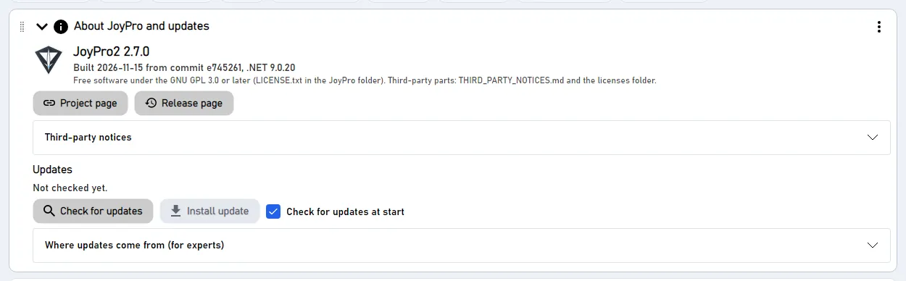
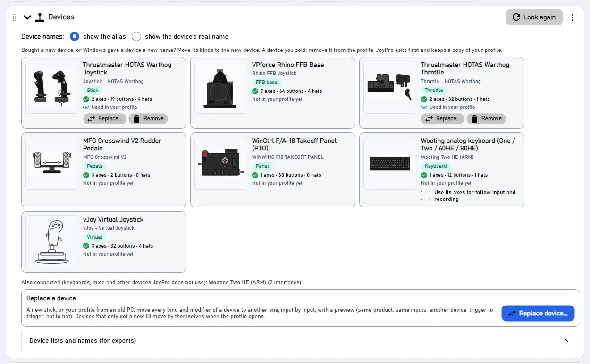

#项目页面
按钮已撰写工具提示 在浏览器中打开该组件的官方发布页面
在组件卡片上：在浏览器中打开组件的官方发布页面，组件自己的项目会在那里介绍它并提供下载。
设置页面在 25 个可展开和折叠的部分中包含 JoyPro 的所有设置。搜索框可以按关键词查找设置（“托盘”“更新”“照片”），顶部的选项卡可以跳到某个部分，你还可以按自己的顺序排列这些部分。每项设置都会立即保存，重启后依然有效；没有保存按钮。


首次启动时只展开 游戏；其他内容点一下即可打开。大多数人只会用到 游戏、外观、语言 和 关于 JoyPro 和更新。
| 分区 | 你在那里设置什么 |
|---|---|
| 游戏 | 你拥有哪些游戏、关联的文件夹、游戏配置监视器、JoyPro 使用的 vJoy 设备 |
| 绑定 | 跟随输入、录制保持按下状态的按钮 |
| 导览 | 欢迎界面、帮助模式（F1）和每个导览，可以重新开始 |
| 启动 | 启动时打开上一个配置文件 |
| 底部栏中的页面 | 隐藏页面、更改它们的顺序 |
| 语言 | JoyPro 的语言 |
| 外观 | 浅色、深色或你自己的颜色、文字大小、界面缩放、主题编辑器 |
| 在后台运行 | 持续监视你的游戏的托盘辅助程序 |
| 确认 | JoyPro 在更改之前提出的问题 |
| 关于 JoyPro 和更新 | 版本、项目页面、更新 |
| 隐私 | 厂商照片、图片包、游戏封面 |
| 使用统计 | 统计页面、你最常用飞机的排名 |
| 遥测录制 | 像 Tacview 一样录制你的飞行 |
| 线稿 | JoyPro 如何绘制你的设备；重置你的布局更改 |
| 报告问题 | 一个包含查找问题所需全部内容的 zip 文件 |
| 本地 AI | 可选的语言模型 |
| 组件 | vJoy、HidHide、ViGEmBus 和其他可选程序 |
| 设备 | 你的设备、它们的名称、替换或移除设备 |
| 命令列表（DB）和游戏路径 | 专家信息 |
| DCS：默认绑定 | DCS 安装目录中 DCS 自己的默认绑定 |
| DCS、Star Citizen 和 IL-2 的命令列表 | 命令列表的专家更新 |
| 游戏的力反馈设置 | 游戏自己的力反馈选项 |
| DCS 力反馈：交换和反转 | 每个设备的 DCS 力反馈方向 |


JoyPro 支持且你拥有的每款游戏一张卡片，带有封面、“已安装”或“未安装”、它的位置以及它保存控制设置的位置。
gui.vromfs.bin 和 lang.vromfs.bin，获取每架飞机和直升机的操作。关闭时：只使用 JoyPro 自己已知的 War Thunder 操作列表。这里不会改动任何游戏。关联的文件夹决定导入和导出在哪里读取和写入；隐藏的游戏不会有导出卡片，也不会被监视。


你对设置向导问题 你使用头部追踪或 VR 吗？ 的回答。使用头部追踪（TrackIR、带面部追踪的网络摄像头、Tobii 眼动仪）或 VR 时，你通过转头来环顾四周。
JoyPro 的所有导览都在一个地方（帮助模式和导览）：


启动时打开上一个配置文件（默认开启）会打开你上次打开的配置文件；路径显示在下方。说明文字解释了配置文件的历史记录：每项更改都会自动保存，每次保存都是 历史记录（顶部栏）中的一个版本。旧版本会被逐步精简：保留最近一天的全部版本，之后 7 天内每小时一个，60 天内每天一个，再往后每周一个；每个配置文件最多 200 MB，全部最多 1 GB。你选择保留的版本会一直保留。


底部栏的每个页面一行。取消勾选你不用的页面；按住某行的手柄拖动（或使用箭头）可以更改顺序。隐藏的页面仍然可以从其他页面打开（例如 打开修饰键页面），打开期间也会显示在栏中。设置页面无法隐藏。重置为默认 会恢复 JoyPro 的默认顺序并显示所有页面。


JoyPro 的语言：英语和其他 38 种语言，或 Windows 语言（Windows 的显示语言；如果 JoyPro 没有该语言，则使用英语）。翻译由机器完成，可能读起来有些别扭；游戏命令名称保持游戏中的原名。托盘辅助程序的菜单也会跟随该语言。


JoyPro 只有在运行时才能察觉你在游戏中更改了控制设置。关闭 JoyPro 后，一个小小的辅助程序会作为系统托盘图标继续监视；它几乎不占 CPU，只用几 MB 内存。


JoyPro 会在难以撤回的更改之前先询问。这里列出了你可以关闭的问题：从关联中移除操作、会丢弃你尚未导出的更改的导入、首次导出到配置文件从未导入过的游戏、会移除绑定的导出，以及导入中的监视器提示。你用“不再询问”关闭的问题会在这里显示为未勾选；重新询问所有内容 会把它们全部重新开启。


版本、构建和许可证信息、项目页面 和 发布页面、第三方声明，以及更新：检查更新、安装更新（下载新版本、校验、安装并重启 JoyPro）、启动时检查更新，以及针对你跳过的版本的 再次提示。“更新来源（面向专家）”写明了 JoyPro 从哪个 GitHub 代码仓库安装发布版。


JoyPro 没有账户，也没有遥测。它只在以下情况联网：检查更新、下载厂商产品照片（在你同意后）、下载这台电脑上缺少的游戏封面、可选的 AI 模型下载、可选驱动程序，以及缺少的 .NET Framework。


JoyPro 会根据游戏自己的日志和 Steam 游戏时长记下你使用了哪些游戏、飞机和飞船，并在这台电脑上保存一份汇总。


录制每一局、每个任务或每次飞行，包含游戏发送的所有遥测数据（位置、姿态、速度、操纵、发动机、武器、事件），就像 Tacview 为 DCS 所做的那样，适用于 JoyPro 能读取遥测数据的每款游戏。


JoyPro 如何在布局页面和设备卡片上绘制你的设备（线条或卡通渲染、JoyPro 的颜色或你自己的颜色），屏幕显示与速查表和导出分别设置。重置我的所有布局更改... 会把每个设备的图片恢复为 JoyPro 的默认状态（你的标记位置、表格和连线、重命名的部件、照片、自定义设备定义以及配置文件使用的布局文件；文件本身保留）；紧接着按 撤销重置 可以把它们恢复。只针对一个设备：在布局页面使用它的 型号... 菜单。线稿相关的控件在 布局 中有说明。


下方有 后台日志保留 n 天（默认 30 天；总共最多 200 MB）和 打开日志文件夹。


可选。JoyPro 的离线规则始终可用；此外，一个免费的开源语言模型还可以在用 AI 管理、用 AI 编辑、JoyPro 助手和按描述分组中理解自由输入的句子，JoyPro 会检查它的每个回答。它只在你使用时才在这台电脑上运行。
llama-server.exe 和 .gguf 文件的路径、在此电脑上查找、使用这些文件、停止使用。



重新查找 会为每个已连接的摇杆、油门和脚舵，以及配置文件使用的每个设备显示一张卡片：它的图片（点击即可在布局页面上打开该设备）、名称、是否已连接以及它有多少个绑定。


在输出面板中以只读方式回答 JoyPro 对每款游戏了解多少：DB 摘要、DB 检查、DB 列表、DB 游戏、DB 飞机、DB 指纹、游戏路径、游戏列表、检测游戏，并可按游戏和飞机筛选。要在游戏更新后读取它的新命令，请使用开始页面上该游戏卡片中的 更新。


DCS 会在每个设备上放置它自己的默认绑定。JoyPro 的 DCS 导出已经会在它写入的每个设备、每架飞机中移除这些默认绑定。这里的两个选项会改动 DCS 安装本身，作用于 所有 设备；除非你开启，否则两者都是关闭的。
<file>.nocombo.bak。保留 UI 层的默认绑定（菜单、VR） 会让 UI 层保持原样。这些选项会改动 DCS 自己的文件。有些多人游戏服务器在这些选项开启时不让你进入；还原 DCS 文件 会把 DCS 的文件恢复原样。DCS 更新或修复会恢复原始文件；JoyPro 会在下次启动时重新应用该选项。


通常，游戏的命令列表是通过开始页面上该游戏卡片中的 更新 生成的。这里提供：只针对部分 DCS 飞机、不写入的试运行，以及旧的点击模式。


游戏提供的每项力反馈设置（强度、效果、按设备设置，在 DCS 中还可以按飞机设置）。JoyPro 会把你设置的值保存在配置文件中，并在导出时写入游戏；你没有保存的设置保持游戏中的原样。选择 游戏、设备 和 飞机（所有飞机，或一架以其值为准的飞机），修改数值，然后按 应用。还原 会丢弃尚未应用的更改，某一行上的 取消设置 会停止保存该项设置，清除 会删除显示的所有已保存设置。JoyPro 自己的遥测力反馈在 力反馈 页面上。


如果你的力反馈摇杆在 DCS 中推的方向不对：为它勾选 交换轴、反转 X 或 反转 Y，然后按 应用。清除 会让设备恢复 DCS 的默认设置。一个带筛选器（仅已连接、仅配置文件）、选择按钮以及 应用所选 / 清除所选 / 全部清除 的设备表格；“手动单设备（高级）”可以按名称设置单个设备。
DCS 在启动时读取每个设备的力反馈方向：交换或反转过的设备在每架飞机中都会朝另一个方向推。
%APPDATA%\JoyPro2\ui-settings.json（窗口、页面、展开的部分及其顺序、主题、语言、确认、隐私相关的回答、系统托盘、本地 AI 选择……），每次更改都会立即写入；主题以 JSON 文件保存在它旁边。视图模型：MainWindowViewModel.SettingsPage.cs（各部分、搜索、顺序；SettingsSectionDefaults 保存 id、标题和搜索关键词），控件 Views/Controls/SettingsSection.cs、SettingsSectionsPanel.cs、SettingsTabStrip.cs。engine games installs、engine games install set、engine games install disable、engine games config set（MainWindowViewModel.GameInstalls.cs、GameSetup.cs）。MainWindowViewModel.NavPages.cs；外观：MainWindowViewModel.Appearance.cs、Services/ThemeService.cs；语言：MainWindowViewModel.Language.cs（本地化）。MainWindowViewModel.Updates.cs（更新）；报告：MainWindowViewModel.AppServices.cs、engine support bundle（日志记录）。engine usage harvest、engine usage ranking、engine usage pin（使用统计）；遥测录制：MainWindowViewModel.TelemetryRecording.cs、engine telemetry sessions、engine telemetry export（遥测录制）。engine llm status、engine llm download、engine llm use-local、engine llm start（自然语言分组）；组件：MainWindowViewModel.Components.cs（组件）。engine devices list、engine devices inputs、engine devices exchange、engine devices remove、engine games devices（设备）。engine dcs strip-defaults、engine dcs device-luas、engine dcs defaults restore（MainWindowViewModel.DcsDefaults.cs）；命令列表：engine dcs refresh id、engine dcs refresh clean、engine db refresh-starcitizen、engine db refresh-il2；专家 DB 查询：engine db summary、engine db check、engine db list、engine db games、engine db planes、engine db fingerprint、engine games paths、engine games list、engine games detect。engine ffb models、engine ffb show、engine ffb set、engine ffb clear（保存在配置文件中，导出时写入；MainWindowViewModel.FfbSettings.cs）；DCS 交换/反转：engine dcs ffb list、engine dcs ffb set、engine dcs ffb clear。本页背后的功能文档，由代码仓库生成：
190 个控件，读取自程序的源代码：190 个已撰写，0 个附有源代码中的信息（工具提示、代码注释、引擎调用），0 个尚待扩充。
工具提示 在浏览器中打开该组件的官方发布页面
在组件卡片上：在浏览器中打开组件的官方发布页面，组件自己的项目会在那里介绍它并提供下载。
工具提示 修复或卸载：打开 Windows 的“已安装的应用”列表，其中有该组件自己的卸载程序
在组件卡片上：在浏览器中打开组件官方项目页面上的许可证。
工具提示 开启：操作的 x 会先询问“移除此操作？”。关闭：立即移除 (Ctrl+Z 可撤销)。
工具提示 开启：如果配置文件中有该游戏尚未写入游戏的更改，游戏卡片上的导入会先询问（先导出、导入、取消）。关闭：立即导入（历史记录可恢复这些更改）。
工具提示 你关闭的所有询问都会再次询问
工具提示 使用已设置的模型开启本地 AI；它会在下一个请求时加载
工具提示 打开“设置 > 本地 AI”：下载模型（先显示大小和许可证）或使用你自己的 llama.cpp
“本地 AI”小标签上的“设置本地 AI”：打开“设置 > 本地 AI”并滚动到那里，你可以在那里下载模型，或让 JoyPro 使用你自己的 llama.cpp。
它本身不会更改任何内容。
工具提示 立即结束本地 AI 模型并释放其内存（下一个请求会重新加载）
工具提示 开：当下方某个游戏运行并发送遥测时，JoyPro 会为每一局、每个任务或每次飞行写入一个文件。关：不录制任何内容，也不查找任何内容。
工具提示 录制文件的保存位置，可在任意驱动器上（选一个有可用空间的驱动器：一小时约 10 到 50 MB）
工具提示 返回 JoyPro 的数据文件夹
在资源管理器中打开录制文件夹。
工具提示 在数值旁边保留游戏自己的数据包、应答和文件，供读取它们的工具使用。大小约为两倍。
从录制文件夹重新读取已录制会话的列表。
工具提示 可由 Tacview 打开的 .zip.acmi 文件：航迹、姿态、速度以及游戏报告的其他对象。仅适用于遥测含位置的游戏。
工具提示 一个文件夹，内含一张按时刻列出所有数值的表、事件、通道列表，以及每个通道一个小文件（逗号分隔，小数点）。
把所选的录制写成一个包含 CSV 文件的文件夹，放进录制旁边的 Exports 文件夹：一张包含每个时刻所有数值的表、事件、通道列表，以及每个通道一个小文件。
资源管理器会打开该文件夹。
删除所选的录制。
“搜索设置”中的 x：清除搜索，让每个分区重新显示。
关闭所有分区，让页面只显示它们的标题；点击你需要的分区即可打开它。
工具提示 浅色配色
工具提示 深色配色
工具提示 跟随 Windows 设置
工具提示 以此主题显示 JoyPro
工具提示 在下方的主题编辑器中打开
工具提示 主题的文字大小，或 100%
“文字大小”旁边的“重置”：放弃你选择的文字大小，重新使用当前主题的文字大小；如果主题没有设置，则为 100 %。
工具提示 恢复为 100%
“界面缩放”旁边的“重置”：整个窗口恢复为 100 %。
主题编辑器：从 JoyPro 的深色配色开始一个新主题，并在编辑器中打开它。
工具提示 别人分享给你的主题文件（.json）
工具提示 将文字颜色调亮或调暗，直到所有文字清晰可读
工具提示 保存并以此主题显示 JoyPro
复制正在编辑的主题，并在编辑器中打开这个副本，用来制作你喜欢的主题的一个变体。
工具提示 将主题保存为文件以便分享
把正在编辑的主题保存为 .json 文件，放在你选择的位置，用来保留副本或分享；其他人可以用“导入...”加载它。
工具提示 将所有颜色恢复为所基于的主题，并将字体恢复为 JoyPro 的字体
删除正在编辑的主题的文件。如果它是正在使用的主题，JoyPro 会回到一个内置主题。
工具提示 首次启动设置：你拥有哪些游戏、链接的文件夹（便携安装）和配置位置
重新查找你的游戏，例如在你安装或移动了某个游戏之后，并更新这里的卡片、“开始”页面和“导出”页面。
工具提示 当你在游戏中更改 JoyPro 管理的控制设置时，JoyPro 会在游戏关闭后询问是否将其带入你的配置文件
默认开启：当你在游戏中更改了 JoyPro 管理的控制设置时，JoyPro 会在游戏关闭后发现这一点，并询问是否把这些更改纳入你的配置文件。
被监视的是你导出过或导入过、并在“开始”页面上勾选了监视的游戏。
工具提示 开（默认）：JoyPro 会解包 gui.vromfs.bin 和 lang.vromfs.bin（只读），以获取每个飞机和直升机的操作。关：JoyPro 只使用其自己已知的 War Thunder 操作列表。
默认开启：JoyPro 生成 War Thunder 命令列表时，会解包游戏的 gui.vromfs.bin 和 lang.vromfs.bin，以获取每个飞机和直升机操作。
关：JoyPro 只使用它自己已知的 War Thunder 操作列表。
工具提示 HLL Vietnam 的文件经过 Oodle 压缩，而游戏本身没有附带 Oodle 库。在你同意后，JoyPro 会使用此电脑上另一个游戏附带的库（在其原位置使用，从不复制）。关：使用 JoyPro 自己的手柄按键列表，这已满足 Xbox 手柄模式的全部需要。
你对 JoyPro 生成 Hell Let Loose: Vietnam 命令列表时所提问题的回答：勾选时，JoyPro 会用另一个已安装游戏附带的 Oodle 库（在其原位置使用）读取该游戏的压缩文件。
不勾选时：使用 JoyPro 自己的手柄按键列表，这已满足 Xbox 手柄模式的全部需要。
忘记你对 Hell Let Loose: Vietnam 文件的回答；JoyPro 下次生成该游戏的命令列表时会再次询问。
工具提示 该文件夹随后会被视为游戏的安装位置（游戏的文件夹、其启动器文件夹或其 bin 文件夹）
工具提示 请选择游戏的 .exe 或其启动器；JoyPro 会关联游戏的文件夹
游戏卡片上的“选择 .exe...”：选择游戏的程序或它的启动器；JoyPro 会据此链接游戏的文件夹，和“选择文件夹...”一样。
工具提示 忘记你的文件夹并重新检测游戏
工具提示 你没有它或不感兴趣：在 JoyPro 中到处隐藏（卡片、导出、监视、游戏列表）；视为未安装。你对它的绑定会保留。
工具提示 按下一个按钮（或大幅移动一个轴），“绑定”或“关联”页面就会跳到其关联；再按一次跳到它上面的下一个关联，没有修饰键的优先。录制或在输入框中打字时不生效。
默认开启：按下一个按钮，“绑定”或“关联”页面就会跳到它的关联；再按一次跳到它上面的下一个关联，没有修饰键的优先。
录制或在输入框中打字时不会生效，并且只在 JoyPro 窗口位于最前面时生效。
工具提示 跟随输入跳转后在列表底部显示的简短提示（BTN 8 on WarBRD: Gear）。关闭后列表仍会跳转。
工具提示 “录制”只获取状态会变化的按钮；录制开始时已按下的按钮（三位开关的中间位、模式开关）永远不会被计入。勾选后：松开会被计为该按钮。
工具提示 开：在名称匹配下方列出“相同功能”（通过同义词或描述找到的相同功能）和“相关”（已折叠）。关：只显示名称包含你输入的每个词的操作。全部 / 轴 / 按钮 旁边也有同一个开关。
如果你靠转动头部环顾四周，请选这个。
如果你用头部追踪、Tobii 眼动仪或 VR 环顾四周，或者打算购买，请选这个。
之后的每次设置都不会在飞行模拟游戏中往你的 HOTAS 上放视角或环顾按钮，只放一个视角回中按钮，让你的按钮留给其他功能。
如果你用摇杆上的苦力帽环顾四周，请选这个。
如果你用摇杆或油门环顾四周，请选这个。
之后的每次设置都会以高优先级把环顾四周放到苦力帽或拇指摇杆上：紧跟在机炮、武器投放、干扰弹、刹车、配平和目标之后。
工具提示 为这些模拟打开设置向导
把此页面在列表中下移一位，也就是在底部栏中右移一位。
工具提示 JoyPro 的页面顺序，显示所有页面
把底部栏的页面恢复为 JoyPro 的顺序，并重新显示每个页面。
工具提示 首次启动时的问题：你想做什么，哪个导览适合你
工具提示 点击任何内容即可查看它的作用；按 F1 或 Esc 结束
点击这里，然后点击任意按钮即可了解它的作用。
“帮助模式”会开启帮助模式：点击任何按钮、字段、列表行或标签页时不再执行它，而是显示它的作用。
按 F1、Esc 或顶部的“结束帮助模式”可以结束它。
工具提示 下次启动时会再次显示欢迎界面，所有导览都将视为未看过
工具提示 在导览和帮助中使用大字和很短的句子。适合儿童，也适合任何想要简单的人。
工具提示 下面的导览只显示你需要的步骤
工具提示 下面的导览显示每一个步骤，包括额外功能
工具提示 开始此导览
工具提示 JoyPro 的窗口显示后，立即打开你上次打开的配置文件。取消勾选则启动时不打开配置文件。
工具提示 登录 Windows 时托盘助手会自动启动；不会打开 JoyPro 的窗口。无需管理员权限；取消勾选可再将其从 Windows 启动项中移除。
工具提示 关闭 JoyPro（X）后，托盘助手会继续监视你的游戏。取消勾选后，关闭 JoyPro 也会结束监视。
工具提示 GitHub 上的 JoyPro：源代码、发布版本、问题报告
在浏览器中打开 JoyPro 在 GitHub 上的项目页面：源代码、各个版本和问题报告。
工具提示 每个版本及其更新内容
在浏览器中打开 JoyPro 在 GitHub 上的版本发布页：每个版本以及它的变化。
工具提示 向 GitHub 查询 JoyPro 的最新版本；更新的版本会连同更新内容一起提示
向 GitHub 查询 JoyPro 的最新版本，并总是告诉你找到了什么：如果有更新的版本，会提供它并说明有哪些变化，否则显示“JoyPro2 已是最新”。
你跳过的版本也会在这里提供。
工具提示 下载新版本，检查并安装，然后重新启动 JoyPro
工具提示 JoyPro 每次启动时向 GitHub 查询一次是否有新版本，并在更新前询问你
你在更新提示中选择了“跳过此版本”：这会忘记这个选择，下次检查时会再次提供这个版本。
工具提示 忘记你为每个设备给出的是 / 否回答；JoyPro 在显示制造商照片前会再次询问
工具提示 当出现一台参考照片不在这台电脑上的设备时，JoyPro 会在后台从原地址（原地址失效时从网页存档）下载，逐张校验并保存在你的数据文件夹中。关闭：JoyPro 提供下载并等待你点击。
工具提示 对于 Steam 在此电脑上没有图片的游戏，其封面会从 Steam 商店或发行商网站下载一次（engine media sources）。关：使用 JoyPro 的徽标和此电脑上已有的图片。下次启动时生效。
工具提示 每个游戏、飞机和飞船的小时数、前 10 名、连续记录、击杀、着陆、跳跃、你的配置文件随时间的变化以及趣闻
工具提示 自动分配、自动分组、设置向导和用 AI 布局，会给你尚未驾驶过的飞机套用同类（喷气机、直升机、飞船）中你最常用飞机的布局。在下方固定一架飞机，即可让它成为模板。
排名某一行上的“固定”/“取消固定”：当“自动分配”、“自动分组”、“设置向导”或“用 AI 布局”为同类的新飞机安排布局时，固定的飞机会作为模板。
在游戏中：之后安排布局的飞机会得到固定飞机的按钮布局。
某一行上的“排除”/“包含”：被排除的飞机或游戏不再计入排名。
把每个设备的图片恢复为 JoyPro 的默认设置：你的标记位置、表格和线条、重命名的部件、照片、自己的设备定义，以及配置文件使用的布局文件。
会先询问；紧接着按“撤销重置”可以把所有内容恢复。
先显示报告中包含的内容，然后在这台电脑上保存一个 zip，其中有你在“发生了什么？”中写的文字和查找问题所需的内容，并在资源管理器中选中它。
你的用户文件夹和用户名会被替换，电子邮件地址和密码会被移除；不会发送任何内容。
在资源管理器中选中“创建报告”生成的 zip，方便你附加它或先查看里面的内容。
在资源管理器中打开 JoyPro 的日志文件夹：GUI 和引擎的后台日志，以及“输出”面板的会话日志。
工具提示 立即加载模型，让你的下一个 AI 请求立刻得到回答（空闲分钟数过后停止）
再次询问引擎哪些内容已设置并在运行，并更新状态行。
工具提示 下载 llama.cpp 和模型，检查 SHA-256 校验和，并开启本地 AI 模型
停止正在进行的模型下载。已经下载的部分会保留；“下载并开启”会继续下载。
从这台电脑上删除所选的已下载模型，释放空间。
选择你自己的 llama-server.exe。然后按“使用这些文件”。
选择你自己的 .gguf 模型文件。然后按“使用这些文件”。
工具提示 在常用文件夹中查找 llama-server.exe 和 GGUF 模型（只读），并选出适合此电脑的组合
工具提示 从现在起，本地 AI 将用此 GGUF 文件运行你的 llama-server.exe（不会下载任何内容）
从官方来源安装 JoyPro 自身需要但缺少的内容，然后再次检查引擎是否能启动。
工具提示 查看已安装和正在运行的内容（只读）
工具提示 打开“设置 > 本地 AI”
“组件”分区中本地 AI 卡片上的“设置”：打开“设置 > 本地 AI”，模型在那里有自己的下载，并列出大小、许可证和校验和。
工具提示 你已连接的摇杆、油门和脚舵，以及你配置文件使用的设备
工具提示 你在“布局”页面命名的设备以该名称显示（真实名称在工具提示中）
工具提示 每个设备都以 Windows 给它的名称显示
设备名称：每个设备都以 Windows 给它的名称显示，即使你在“布局”页面上给它起了名字。
设备卡片的图片：在“布局”页面打开该设备，显示它的图片、标记和绑定。
工具提示 模拟量键盘也会把按键报告为轴：打字时轴会移动。除非勾选此项，否则 JoyPro 在跟随输入和轴录制中会忽略其轴。其按键和按钮始终有效。
工具提示 把此设备的绑定逐个输入地交给另一个设备，并带预览
卡片上的“替换...”：打开一个窗口，把一个设备的每个绑定和修饰键逐个输入地交给另一个设备，并带有预览，例如换了新摇杆，或使用旧电脑上的配置文件。
在按“移动绑定”之前不会移动任何内容；它会先询问，并在旁边保留一份配置文件副本；“撤销”可以撤回这次移动。
工具提示 从你的配置文件中删除此设备的绑定（会先询问）
用引擎看到的设备名称填充下方的“已连接的设备”和“配置文件中的设备”列表。
用 JoyPro 知道的每个输入名称填充“输入目录”。
工具提示 已连接的设备及其 VID:PID、HID 名称和 DirectInput 轴、按钮与苦力帽（显示在输出面板中）
把每架 DCS 飞机的命令列表与它的 DCS clean 配置文件进行比较，并在“输出”面板中显示数量：飞机列表、缺少的 clean 配置文件、只通过别名匹配的名称。
不会检查其他游戏。
工具提示 DCS 的每个摇杆输入文件都会关闭其默认绑定 (combos = nil)；每个原文件保存为 <file>.nocombo.bak。
工具提示 让 UI 层 (Config > Input > UiLayer) 保持 DCS 发布时的样子
工具提示 像“Joystick - HOTAS Warthog.lua”这样的文件会移到 JoyPro 的备份文件夹，这样 DCS 对每个设备都使用 default.lua（JoyPro 1 的做法）。被其他 DCS 文件使用的文件以及 UI 层的 VR 控制器文件会保留。
默认关闭。开：DCS 针对单个设备的默认文件会移到 JoyPro 的备份文件夹，让 DCS 对每个设备都使用普通默认设置；被其他 DCS 文件使用的文件会保留。
会先询问；然后 JoyPro 会重建一次它的 DCS clean 列表。
工具提示 列出 strip 选项会更改的 DCS 文件；不会写入任何内容
工具提示 重新执行已开启的内容，例如在 DCS 更新之后
工具提示 来自 Saved Games > DCS > BACKUP_JOYSTICK_DEFAULTS (engine dcs defaults restore)
为“刷新 ID DB”/“刷新干净 DB”勾选下方列表中的每架 DCS 飞机。
取消勾选列表中的每架 DCS 飞机。如果一个都没勾选，刷新会覆盖每架已安装的飞机。
列表中的一架 DCS 飞机：“刷新 ID DB”和“刷新干净 DB”只读取勾选的飞机。
刷新会读取并报告，但不写入命令列表。
仅限旧版点击模式：从屏幕上读取控制菜单的文字来找到各个条目。
仅限旧版点击模式：JoyPro 自己启动 DCS 来进行点击。
仅限旧版点击模式：点击之后 DCS 保持打开。
仅限旧版点击模式：显示点击会落在控制菜单中的什么位置，但不会真的点击。
配合“刷新 Star Citizen DB”：读取游戏并报告会有什么变化，但不写入命令列表。
配合“刷新 IL-2 DB”：报告 IL-2 按键映射文件中的哪些操作会被添加，但不写入任何内容。
工具提示 不再存储此设置：游戏重新使用其自身的值。
工具提示 将更改的设置存储到配置文件中（ffb set）。
放弃你做了但还没应用的力反馈更改；各行重新显示已存储的值或游戏中的值。
工具提示 删除此处显示的所有已存储设置（ffb clear）；游戏保留其自身的值。
在 DCS 力反馈表格中只显示当前已连接的设备。
在表格中只显示你的配置文件使用的设备。
开启时，在表格中勾选“交换轴”、“反转 X”或“反转 Y”会立即把该设备存储到你的配置文件中，不用按“应用”。
重新读取每个已知设备的 DCS 力反馈设置，并填写表格。
勾选表格中每个设备的“选”。
取消勾选表格中每个设备的“选”。
只勾选已连接设备的“选”。
只勾选你的配置文件使用的设备的“选”。
把每个选中设备的“交换轴”、“反转 X”和“反转 Y”存储到你的配置文件中；DCS 会在下次 DCS 导出时得到它们。
在游戏中：下次导出并启动 DCS 之后，这些设备会朝另一个方向推。
从你的配置文件中移除所选设备已存储的力反馈设置：从下次 DCS 导出起，DCS 重新对它们使用默认值。
从你的配置文件中移除每个设备已存储的力反馈设置：从下次 DCS 导出起，所有设备都使用 DCS 的默认值。
某一行上的“清除”：从你的配置文件中移除该设备的已存储设置，这样下次 DCS 导出会让它恢复 DCS 默认的力反馈方向。
手动单个设备：反转上方指定设备 X 轴上的力反馈。
手动单个设备：反转 Y 轴上的力反馈。
手动单个设备：交换 X 和 Y 力反馈轴。
手动单个设备：把这三个勾选存储到你的配置文件中，用于上方指定的设备；DCS 会在下次 DCS 导出时得到它们。
手动单个设备：从你的配置文件中移除上方指定设备的已存储设置；下次 DCS 导出时生效。